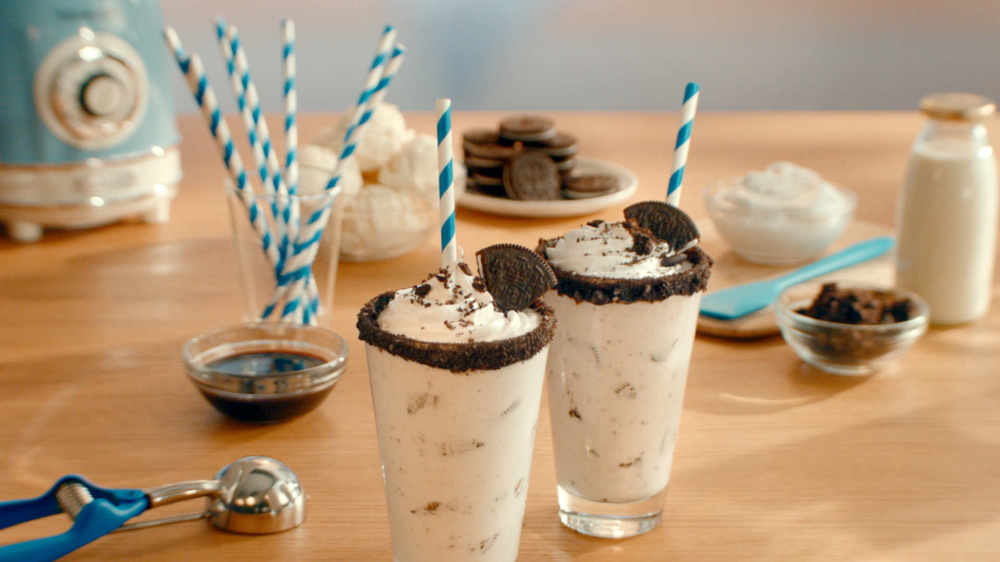

Oreo Shake

Description
An Oreo shake is a delicious and indulgent drink made by blending together vanilla ice cream, milk, and Oreo cookies. It has a creamy texture with small bits of Oreo cookie mixed throughout, giving it a rich chocolatey flavor with hints of vanilla. It's often topped with whipped cream and extra crushed Oreo cookies for an extra treat.
Ingredients
- 6 OREO cookies, divided
- 1 Tbsp (15ml) chocolate syrup
- 1-1/4 (300ml) cups milk
- 2-1/2 cups (625ml) vanilla ice cream, softened
- 1/4 cup (60ml) whipped cream
Steps
- Cut 1 cookie into quarters; reserve for garnish. Chop 4 of the remaining cookies; set aside.
- Crush the remaining cookie into fine crumbs; pour into shallow dish. Brush rims of 4 (8-oz./250ml) glasses lightly with chocolate syrup.
- Dip tops of glasses, one at a time, into cookie crumbs, turning to evenly coat each rim with crumbs.
- Blend milk and ice cream in blender until smooth. Add chopped cookies; pulse just until blended. Pour into prepared glasses.
- Top with whipped cream and reserved quartered cookie pieces.